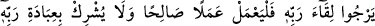
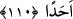

110. De ki: Ben, yalnızca sizin gibi bir beşerim. (Şu var ki) bana, İlâhınızın,
sadece bir İlâh olduğu vahyolunuyor. Artık her kim Rabbine kavuşmayı umuyorsa,
iyi iş yapsın ve Rabbine ibadette hiçbir şeyi ortak koşmasın.
Ey Muhammed! “De ki: “Ben yalnızca sizin gibi bir beşerim.” sûret olarak
âdemoğluyum, beşerî sıfatlarda sizinle müsâvîyim. Şu var ki Rabbim tarafından “bana,
İlâhınızın, sadece bir İlâh olduğu vahyolunuyor.” Ulûhiyette O’nun zâtının bir benzeri
olmadığı gibi sıfatlarında da onun ortağı yoktur. Yâni, ben beşer olduğumu îtiraf
ediyorum. Fakat sizin aranızda Allah Teâlâ bana peygamberlik ve risâletle ihsanda
bulundu.
et-Te’vîlâtü’n-Necmiyye’de şöyle der: “Bu âyet işaret etmektedir ki Âdemoğulları;
peygamber, velî, mü’min ve kâfir; beşeriyyet ve insanlık istîdâdında eşittir.
Aralarındaki fark îman, velâyet, nübüvvet, vahiy ve Allah Teâlâ’nın âlemlerin ilâhı, tek,
samed (kimseye muhtaç olmayıp, her şeyin O’na muhtaç olduğu), doğmadığı ve
doğurmadığı, hiçbir şeyin O’na denk olmadığını bilme fazîleti iledir.”
Şeyh Sa‘dî der ki:
Kâfir de görünüşte bizim gibidir; doğru yol gerek, uzun boy değil
“Artık her kim Rabbine kavuşmayı umuyorsa,”
“O’na kavuşmak”tan maksad, Allah’ın ikram ve ihsanına nâil olmaktır. Yâni kim
Allah’ın ikram ve ihsanına ümit beslemeye devam ederse, demektir.
İmam (Razî) şöyle der: “Ehl-i sünnet âlimleri, ‘Allah’a kavuşmayı’ O’nu görmeye
(rü’yetullaha), Mu‘tezile ise sevaba nâil olmaya hamletti.
Bu kıymetli arzu ve talebine nâil olmak için “iyi iş yapsın” sâlih amel işlesin, lâyık
yâni Hakk’ın makbûlü bir iş işlesin.
Antâkî der ki: “Kim Allah’ın huzûrunda durmaktan korkarsa, O’na arzedilmeye lâyık
amel işlesin.”
“Recâ (ummak)” hem korkmak hem de ummak mânâsına gelir. Nitekim Beğavî
Tefsîri’nde böyle denilmektedir.
Zünnûn der ki: “Sâlih amel, gösterişten uzak olarak hâlis niyetle yapılan ameldir.”
Ebû Abdillah Kuraşî de şöyle der: “Sâlih amel, nefsin iltifat etmediği, sevab ve
karşılık beklentisi içinde de olmadığı ameldir.”
et-Te’vîlâtü’n-Necmiyye’de şöyle der: “Sâlih amel, Hz. Peygamber (s.a.)’in peşi sıra
gitmek, zâhiren ve bâtınen O’nun sünnetine uymaktır. O’nun bâtınının sünneti, tamamen
Allah’a yönelmek (tebettül), mâsivallahtan nazarını kesmektir.” Yâni himmet nazarını